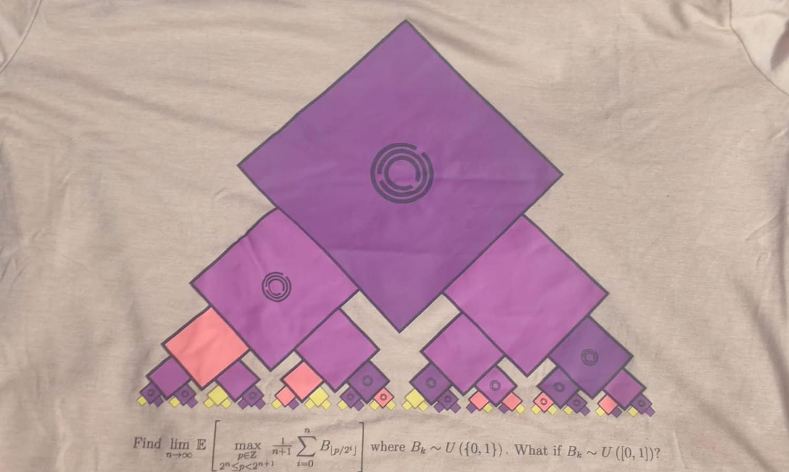

No the gift is NOT a maths textbook. I honestly don't know what I'd do if someone gifted me one. The answer ranges from using it as a paperweight to scrambling in a spiral trying to understand what a symbol means at 3am — I don't even know which one's worse honestly: being too nonchalant or being too passionate. I bet on the first one though.
Anyways, the gift in question was from a friend at IIT Bombay who was part of the Quant club (shoutout to you Divyansh, you a G). The silly rodeo of agreeing to carry the extra t-shirts back to college for redistribution to a mutual friend might have cost me ₹2100 on my Indigo flight for "extra luggage." That's right folks, the gift was a t-shirt.
Not just any t-shirt though — it was a piece of Jane Street merchandise. I know a few people who'll sacrifice their not-so-loved ones for that (totally not me).
When I was in my first year, at the end of it, I found out that one of my seniors was interning at Graviton (please look it up, I am not doing free promo for apparently anyone other than Jane Street). All I honestly knew then was that: it paid well, it had something to do with ML, and — money. We had discussions about it, and I know slightly more about quant now than I did then, but honestly, I still have no clue if I want in or not. Mind you, these are very similar to the thoughts I had during my JEE prep — maybe I'll write about that too.
Getting Back to the Equation
Since I now have a blog, I don't have to smoosh topics together — we can do an article on my situationship with quant later. Getting back to the equation, here's the t-shirt logo, nested in what's called a Pythagoras Tree Fractal:

The all knowing Tshirt
How does this connect to quant, you may ask? Buckle up for a lesson, folks. In quantitative finance, trees are used to model probability, uncertainty, and time. Here's a simpler, real-world way to think about it.
1. The Stock Market "Choose Your Own Adventure" (Binomial Pricing)
Imagine you're looking at a stock today, and you want to guess where it'll be in a week. Instead of guessing randomly, you build a game tree: tomorrow, the stock can only go Up or Down. The day after, from the "Up" spot it can go Up-Up or Up-Down, and from "Down" it can go Down-Up or Down-Down.
Keep drawing these branches for every day and you get a massive branching grid that looks exactly like the Pythagoras Tree. Wall Street traders use this exact "lattice" map to calculate all the possible future paths a stock could take — and from that, figure out a fair price to charge for financial contracts like options today.
2. The Algorithmic Voting Booth (Decision Trees & Random Forests)
When quant firms use machine learning to predict markets, they don't just guess — they use data to make a chain of binary "yes or no" decisions. A Decision Tree is like playing 20 Questions with data: is market volume high? If yes — did the stock drop yesterday? If yes — buy.
A Random Forest is what happens when you grow a whole bunch of these different decision trees at once. Each tree looks at a slightly different slice of market data and makes its own branching prediction. In the end, all the trees vote on the best move — if 70% vote "buy," the algorithm executes the trade.
(I'm done now, but we have an equation to cover — also notice how I didn't mention terms like "alpha" or "Cox-Ross-Rubinstein binomial trees." I don't want you guys feeling dumber. Unlike what you may think, I am nice like that.)
The Equation, In Plain English
Imagine you're playing a video game where you start at the trunk of a massive tree.
The rules: you walk outward along the branches. Every time a branch forks, you choose left or right, step after step, until you reach the outer tips of the tree. Every fork has a treasure chest sitting on it, and every chest holds a random reward. Once you reach the end of your walk, your final score is the average value of every reward you collected along that path.
The question is: what happens to your score under two different reward rules as the tree grows infinitely large?
Scenario A: Chests are either empty or hold exactly one dollar
Every chest is a coin flip — it either contains a dollar bill or nothing. Because the branches split in two at every step, the total number of unique paths multiplies incredibly fast — billions of routes, deep enough into the tree. Even though any random path gives you a disappointing mix of empty chests and dollar bills, the sheer volume of choices changes the game. Because there are so many total paths to pick from, you're practically guaranteed to find at least one perfect path where every chest along the way holds a dollar.
The answer: since you can scan the whole tree and pick that perfect route, your maximum average score will always end up being exactly one dollar.
Scenario B: Chests hold any random amount between zero and one dollar
Now the rewards are fluid — a chest could hold twenty-three cents, eighty-eight cents, a single nickel. Blindfolded and picking a path at random, your average score would land around fifty cents. But you have an advantage: you can map out the entire tree before you start walking. You can avoid branches littered with pennies and steer toward the ones loaded with higher payouts.
The answer: because you're always picking the best options and dodging the bad ones, your final average score pulls way ahead of the fifty-cent baseline, leveling out at a specific value around eighty-four cents.
The algorithm uses optimization mathematics to instantly map out the entire network, dodge high-friction options, and secure the single most profitable path available — just like finding the highest-paying route through the branches of a random tree.
(I did not want to type out symbols, hence the plain English, folks.)
Anyways, that's it — enough maths for today. This was like being gifted a maths textbook. I see the sun coming up. If any of you is inspired to make a hedge fund out of this, give me a call. Read: a job.